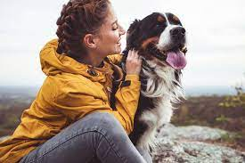

Buna! Numele meu este Rookie si sunt foarte jucaus si dragastos. Am nevoie de o familie care sa ma iubeasca asa cum sunt, plin de energie. Nu sunt o mare bataie de cap, am nevoie doar de o baie din cand in cand pentru ca imi place sa ma tavalesc in namol atunci cand ploua, niste mancare (promit sa nu mananc prea multa), apa si multa multa iubire, si daca ai putea sa-mi arunci mingea din cand in cand ar fi perfect.

Meow! Numele meu este Cecy si sunt o pisica foarte linistita. Imi place sa fiu mangaiata si iubita. Nu sunt foarte jucausa, dorm in cea mai mare parte a timpului. Ador cutiile de carton, deci nu trebuie sa investesti bani intr-un patut de pisici. Imi caut o familie de mult timp, inca de cand eram mica, chiar sper ca anul acesta sa fiu norocoasa.
Ce parere au utilizatorii
Eugen
Am adoptat o pisica de pe acest site acum un an, eram singur, acum ea e toata familia mea, o iubesc nespus de mult!
Ioana
Cred ca mai multa lume ar trebui sa adopte. Sunt foarte multumita de acest site, chiar am reusit sa imi gasesc animalutul care sa se potriveasca perfect cu personalitatea mea. Am adoptat un catelus mic, este adorabil!
Hotelul animalelor
Pe langa faptul ca oferim sute de animalute spre adoptie, va puteti lasa de asemenea micul prieten patruped in grija noastra.